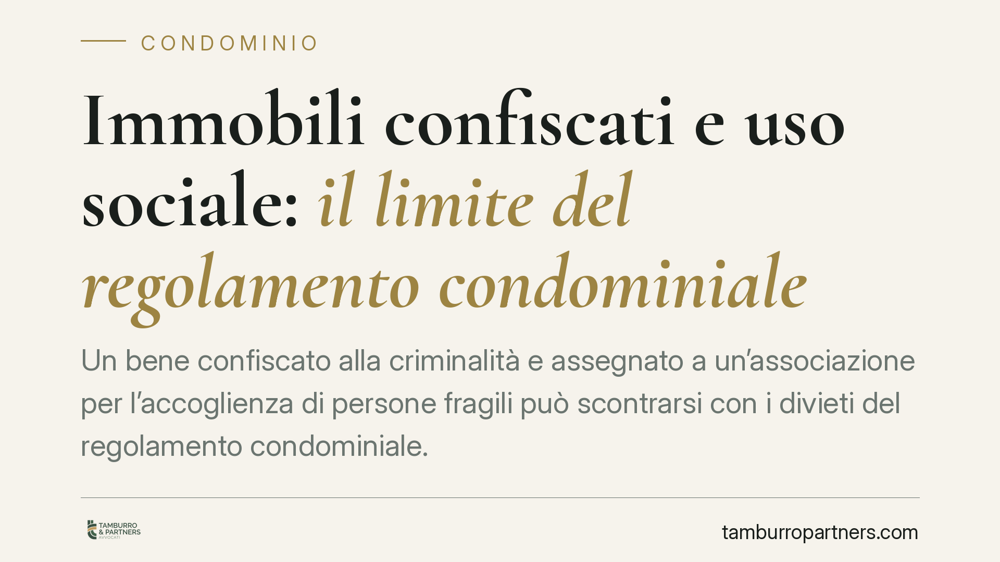

Immobili confiscati e uso sociale: il limite del regolamento condominiale
Un bene confiscato alla criminalità e assegnato a un'associazione per l'accoglienza di persone fragili può scontrarsi con i divieti del regolamento condominiale. La giurisprudenza amministrativa tende a far prevalere la destinazione a finalità sociali, radicata nel Codice antimafia. Analizziamo il nesso tra interesse pubblico e autonomia condominiale, con indicazioni operative distinte per il condominio e per l'ente assegnatario.

Il caso e il principio
Un immobile confiscato alla criminalità organizzata viene acquisito al patrimonio indisponibile dello Stato e poi assegnato a un'associazione del Terzo settore per l'accoglienza di persone in condizione di fragilità. Il condominio in cui l'immobile si trova si oppone, invocando il proprio regolamento, che vieta usi diversi da quello abitativo o attività che comportino afflusso di pubblico.
La questione è ricorrente e la giurisprudenza amministrativa mostra un orientamento consolidato: la destinazione a finalità sociali di un bene confiscato, quando si radica su un procedimento pubblico di assegnazione, tende a prevalere sui divieti di fonte regolamentare condominiale. Il baricentro del ragionamento non è l'autonomia privata del condominio, ma l'interesse pubblico tipizzato dal legislatore.
> Nota metodologica: alcune pronunce circolate sul tema recano estremi non ancora verificabili. In assenza di riscontro certo su numero, sezione e anno, trattiamo qui l'indirizzo come orientamento giurisprudenziale, senza attribuirlo a una singola sentenza non accertata.
Inquadramento normativo
Il punto di partenza è il Codice antimafia (D.Lgs. 159/2011). Gli artt. 48 e seguenti disciplinano la destinazione dei beni confiscati. In particolare, l'art. 48, comma 3, prevede che gli immobili possano essere trasferiti o assegnati, anche a titolo gratuito, a enti e associazioni per finalità sociali e istituzionali. È questo meccanismo che trasforma un bene privato in uno strumento di interesse pubblico, gestito tramite l'Agenzia nazionale per i beni sequestrati e confiscati e l'ente territoriale competente.
L'ente assegnatario, nella prassi, è un ente del Terzo settore qualificato ai sensi del D.Lgs. 117/2017 (Codice del Terzo settore) e iscritto al RUNTS (Registro unico nazionale del Terzo settore). L'iscrizione non è un dettaglio formale: attesta la natura dell'ente e la sua idoneità a perseguire finalità civiche, solidaristiche e di utilità sociale.
Sul versante condominiale rileva l'art. 1138 del Codice civile, che disciplina il regolamento condominiale e stabilisce che le norme regolamentari non possono menomare i diritti dei condòmini risultanti dai singoli atti di acquisto. Occorre però una precisazione: la distinzione tra regolamento assembleare (approvato a maggioranza) e regolamento contrattuale (accettato da tutti i proprietari e idoneo a incidere sui diritti reali) non è codificata nell'art. 1138, ma è frutto di elaborazione giurisprudenziale. È una distinzione decisiva, perché solo il regolamento contrattuale può imporre limiti all'uso delle singole unità; e anche in quel caso tali limiti devono fare i conti con interessi di rango superiore.
Implicazioni pratiche
Per il condominio, il messaggio è chiaro: il semplice richiamo a una clausola regolamentare che vieta certi usi non è di per sé sufficiente a bloccare l'assegnazione di un bene confiscato a fini sociali. L'interesse pubblico fondato sul Codice antimafia pesa diversamente da un interesse privato di quartiere.
Resta però una linea di difesa legittima e distinta. Un conto è opporsi al divieto regolamentare in astratto; altro è reagire a usi concretamente lesivi: immissioni intollerabili, pregiudizi alla sicurezza, danni alle parti comuni. Questi profili non si risolvono invocando il regolamento contro la destinazione sociale, ma attraverso i rimedi ordinari previsti dall'ordinamento (tutela contro le immissioni, risarcimento del danno, obblighi di manutenzione e sicurezza).
Per l'ente assegnatario, la posizione è più solida ma non priva di oneri: l'uso deve restare entro la finalità assegnata, e la gestione dell'immobile deve rispettare le regole di convivenza condominiale che non confliggono con la destinazione pubblica.
Cosa fare in concreto
Se rappresenti il condominio:
- Verifica la natura del regolamento: distingui tra clausole assembleari e clausole contrattuali, e controlla il titolo di acquisto delle unità.
- Non confidare nel solo divieto regolamentare contro una destinazione sociale radicata nel Codice antimafia: valuta la tenuta effettiva dell'opposizione.
- Documenta eventuali usi concretamente lesivi (immissioni, sicurezza, danni) e azionali con i rimedi specifici, separandoli dalla contestazione sulla destinazione.
Se rappresenti l'ente assegnatario:
- Conserva e tieni aggiornata la documentazione dell'assegnazione (atti dell'Agenzia, provvedimenti dell'ente territoriale, iscrizione al RUNTS) a sostegno della legittimazione.
- Mantieni l'uso dell'immobile entro la finalità sociale assegnata e rispetta gli obblighi condominiali di gestione e sicurezza.
Le pronunce in materia riguardano casi specifici, con regolamenti, titoli e atti di assegnazione propri. Ogni situazione va valutata nel dettaglio dei suoi documenti e non per automatismi.
---
Contributo informativo a cura di Tamburro & Partners - Avv. Giuseppe Tamburro. Non costituisce parere legale.
Ogni condominio ha una storia a sé.
Se gestisci un'amministrazione e vuoi un confronto su una specifica questione condominiale, scrivi allo studio. Ti rispondiamo entro un giorno lavorativo.